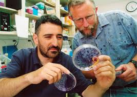

The Nobel Prize in physiology or medicine was awarded Monday to researchers from the United States and Britain whose discoveries helped
millions of
lives from the ravages of blood-borne hepatitis, a major global health problem that causes cirrhosis and liver cancer.
Harvey J. Alter, then a clinical scientist at a National Institutes of Health blood bank, showed that the chronic form of hepatitis disease,
known as hepatitis C, was blood-borne and probably caused by a virus.
Years later, British-born virologist Michael Houghton — then working for the pharmaceutical company Chiron — found a way to clone the virus and
to identify antibodies created against it by the immune system; this led to the development of ways to screen and eliminate the virus from the blood supply.
Through genetic analysis, then-Washington University in St. Louis researcher Charles M. Rice characterized the machinery of the virus and set scientists on a path to finding a cure.
Their research helped almost eliminate the risk of getting hepatitis C through blood transfusions and led to the development of antiviral medications
that can completely clear the virus from the bodies of infected patients.
“One of the greatest thrills for me has been having identified the first patient [with hepatitis C] and now seeing that not only he was cured,
but everyone else I’ve followed over the years was cured,” Alter told reporters Monday morning. “I could not have imagined this, not in my lifetime.”
The Nobel Committee called the three researchers’ work “a landmark achievement in our battle against viral infections.”
“It’s hard to find something that is of such benefit to mankind as what we are awarding this year,” said Thomas Perlmann, secretary of the Nobel Committee.
“This discovery … has led to improvements for millions of people around the world.”
Hepatitis viruses come in several forms: hepatitis A, which is transmitted through contaminated water or food and is rarely deadly; and hepatitis B and C,
which are carried in blood and bodily fluids and can be far more dangerous. The latter viruses are “insidious,” the Nobel Committee said, because they can
linger for years in the blood of an apparently healthy person before erupting into a dangerous disease.
Alter, who had worked with Blumberg, spearheaded a new NIH project to create a storehouse of blood samples, which could be used to uncover the causes of the transfusion-associated disease.
He also tracked people who developed hepatitis after receiving a blood transfusion. His work showed that, before 1970, 30 percent of people who got heart transplants at NIH later came down with liver disease.
Yet most illnesses weren’t caused by the A or B virus — there had to be “another infectious agent,” Karlsson-Hedestam said.
In 1978, Alter showed that plasma from patients carrying this unknown form of hepatitis could transmit the disease to chimpanzees. The pathogen was small enough to slip through filters,
suggesting it was a tiny virus, rather than a bacterium.
But much about the germ remained unknown — a fact that frustrated Alter so much he was moved to write poetry. “No antigen or DNA / No little test to mark its way,” he wrote in 1988.
The experiments took the better part of a decade, Houghton wrote in a 2009 review for the Journal of Hepatology.
The “eureka moment,” he said, “was in fact a very gradual and extended one.”
The research led to the development of a test for screening hepatitis C in the blood supply. Since screening began in 1992, the risk of infection from a transfusion has fallen dramatically.

The final step to characterize the virus came when Rice sequenced its genome and created a clone of the virus.
Animals injected with the clone fell ill, providing conclusive evidence the hepatitis C virus was, in fact, the cause of the disease.
Genetic research also allowed Rice to tweak the virus so it was easier to study in a petri dish. This set the stage for the development of powerful anti-viral drugs,
which are able to eliminate the virus in more than 95 percent of treated patients, Karlsson-Hedestam said. Few other viral diseases have such an effective cure.